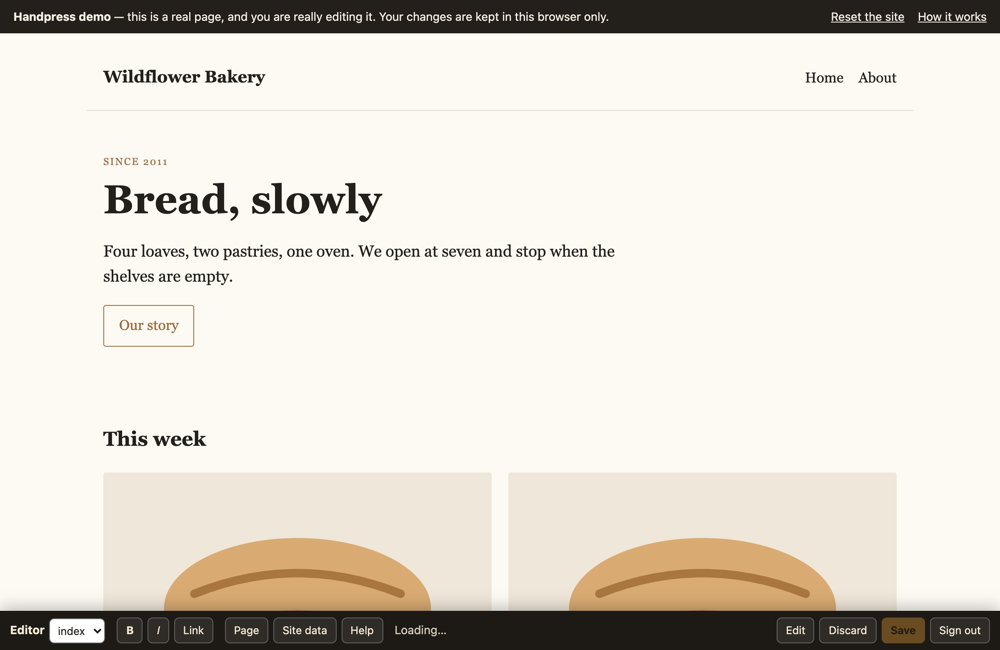
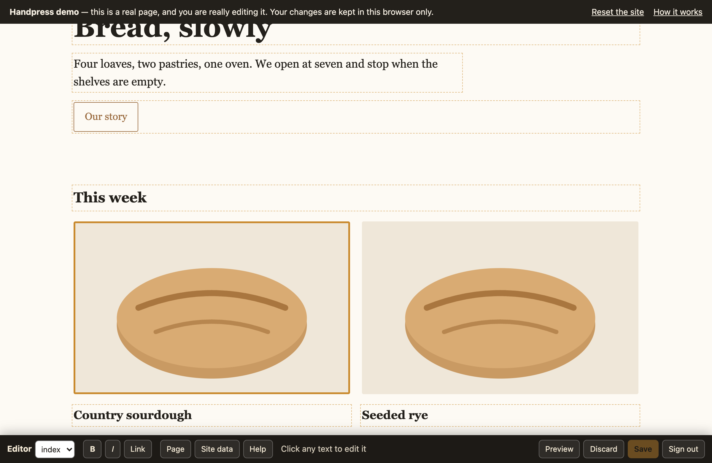
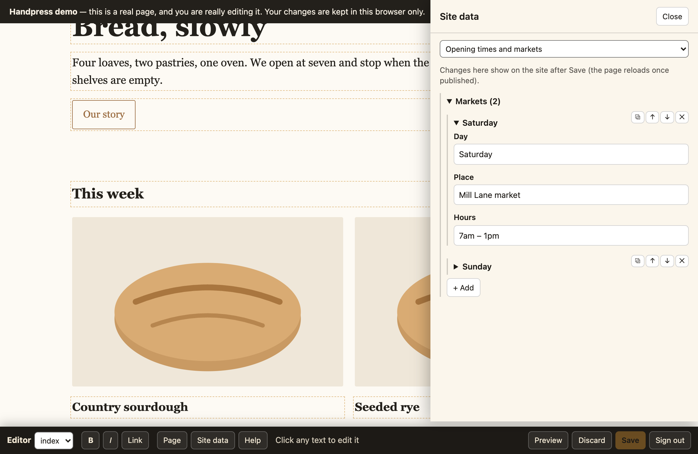

Handpress
Let a client edit a hand-written static site — the real pages, in place, in the browser.
Click this line and type. That is the whole idea.
What it is
Handpress adds an editor to a static site you wrote by hand. Someone with no technical knowledge signs in with Google, clicks the page, and types. Saving writes the HTML files and commits them to your repository.
Most content systems ask you to break a design into templates and move the words into a database. That is the right trade for a publication with a thousand posts. It is the wrong trade for ten careful pages where the layout is the product, and the owner wants to fix a date or swap a photograph twice a year.
| No templating | Your markup is untouched apart from a small data-e key on each editable element. |
|---|---|
| No database | Files in git. Undo is git revert. Your backups are your repository. |
| No build | One JavaScript file, loaded only for signed-in editors. Visitors download nothing. |
| Clean diffs | A changed sentence is a one-line diff you can review in a pull request. |
| Design holds | New entries are copies of existing ones, so nobody invents a layout by accident. |
Demo
The demo is a small bakery site with the real editor on it. No sign-up: it answers the editor's requests inside your own browser and keeps changes in your browser's storage, so you can edit freely and press Reset the site when you are done.



Install
Handpress has two halves: two files in your site, and a small server that commits. The example below is Cloudflare Workers; other hosts work too.
-
Put the editor in your site
npm i -D handpress npx handpress install ./publicThat writes
editor.jsandadmin.htmlinto your site directory. Commit them. -
Key your pages
npx handpress keys "public/*.html" --global "header, footer"--globalnames the blocks repeated on every page. Their keys line up across pages, so editing the footer once changes all of them.This rewrites your HTML: it adds the keys and normalises the markup to exactly what a browser writes back (
defer="",&, closed tags).Commit that reformat on its own, before any content change, or your first content diff will be unreadable. Re-run the command after hand-editing HTML; existing keys are never renumbered.
-
Load the editor for editors only
if (/(?:^|;\s*)ed=1/.test(document.cookie)) { var s = document.createElement('script'); s.src = '/editor.js'; s.defer = true; document.head.appendChild(s); }The
edcookie is only a hint that says "show the editor". Every read and write is checked on the server against an HttpOnly session, so a visitor setting the cookie by hand gets nothing. -
Configure the server
Point a Worker at
node_modules/handpress/src/worker.jsand describe what may be edited:"vars": { "GITHUB_REPO": "you/your-site", "GITHUB_BRANCH": "main", "GOOGLE_CLIENT_ID": "…apps.googleusercontent.com", "EDITOR": { "pages": ["index.html", "about.html"], "dataFiles": { "data.js": "Opening times" }, "globalBlocks": ["header", "footer"], "uploadDir": "uploads" } }wrangler secret put GITHUB_TOKEN # fine-grained, this repo only, Contents: read and write wrangler secret put SESSION_SECRET # openssl rand -hex 32 wrangler secret put ADMIN_EMAILS # comma-separated Google addresses allowed to edit -
Set up sign-in
In the Google Cloud console, create an OAuth client ID of type Web application and add your site's origin under Authorized JavaScript origins. Put the client ID in
GOOGLE_CLIENT_ID.Deploy, then visit
/adminand sign in.
Options
Everything the editor may touch is declared in the EDITOR object. Anything not
listed cannot be read or written, by anyone, including a signed-in admin.
| Option | Type | What it does |
|---|---|---|
pages | string[] | The pages that can be edited, as repository paths. Required. |
dataFiles | object | Path to label, for each data file. A data file is window.NAME = { … valid JSON … }; — the label is what the editor shows in its Site data panel. |
globalBlocks | string[] | Selectors for blocks repeated on every page (header, footer, #menu). Edited once, written to every page, with the current page's nav link marked. |
uploadDir | string | Where new images are committed. Only jpg, png, webp, gif and svg, and only in this directory. |
forceVisible | string | A CSS selector kept visible while editing. Set it if you animate elements into view, or the editor's owner cannot click what has not appeared yet. |
Environment
| Name | Where | What it is |
|---|---|---|
GITHUB_REPO | var | owner/repo that saves are committed to. |
GITHUB_BRANCH | var | Branch to read and commit, usually main. |
GOOGLE_CLIENT_ID | var | OAuth client ID used by the sign-in page. |
GITHUB_TOKEN | secret | Fine-grained token, that repository only, Contents: read and write. |
SESSION_SECRET | secret | Signs the session cookie. Any long random string. |
ADMIN_EMAILS | secret | Comma-separated Google addresses allowed to edit. |
Command line
handpress install <dir> | Copies editor.js and admin.html into your site. Re-run after upgrading the package. |
handpress keys "<glob>" [--global "header, footer"] | Adds the editing keys. Idempotent: existing keys are kept, new elements get new ones. Skips admin.html. |
What the keys mean
data-e="t12" | A block of text, edited in place. |
data-e="m12" | An image: replaceable, with its alt text. |
data-e="i12" | An item of a repeating list that is not itself text. |
data-e-list | A container whose children can be duplicated, moved and deleted. |
data-e="gt12" | The g prefix marks a key inside a global block, shared across pages. |
How it works
Three pieces: a script that keys your pages, the editor in the browser, and a server that commits.
Why the editor keeps two copies of the page
A live page has been rearranged by your own JavaScript: lists rendered, counters animated, classes toggled. Saving what is on screen would bake all of that into the file, and your markup would rot a little with every save.
So the editor fetches the page's source and keeps it as a second, script-free DOM. Each edit is applied to both: to the live page so the editor sees it, and to the source so what gets written is clean HTML. The live page is a preview; the source is the truth.
That is also why keys exist. They are how an element in the live page is matched with the same element in the file, even after your scripts have moved things around.
Hooks
If your own scripts fight the editor, set window.EDITOR_HOOKS before
editor.js loads.
window.EDITOR_HOOKS = {
// Before an element becomes editable. Return a replacement to use instead.
// Here: detach a counter from the animation that would overwrite what is typed.
beforeEdit(el) {
const fresh = el.cloneNode(false);
el.replaceWith(fresh);
return fresh;
},
// When edited text is copied back to the source, for attributes that must follow it.
// liveEl is null when a page is rebuilt at save time, so change sourceEl only.
syncUnit(sourceEl, liveEl) {
sourceEl.setAttribute('data-count-to', parseInt(sourceEl.textContent, 10));
},
// Parts of the page your script draws from a data file: [selector, data file, dotted path, label].
// While editing, each gets "+ Add" (and "+ Add images" when entries have an image field such as
// src), a button that opens the list in "Site data" and, when the element has one child per entry,
// handles on each entry: move, duplicate, edit, remove. Pair it with dataChanged.
dataRegions: [['[data-markets]', 'data.js', 'markets', 'Markets']],
// What "+ → New" offers, as [label, html]. {k} becomes a fresh key. Use your own classes.
blocks: [['Paragraph', '<p data-e="{k}">New paragraph</p>'],
['Button', '<a class="btn" href="#" data-e="{k}">New button</a>']],
// Called with unsaved data-file contents as they are edited (and on load, while a draft
// exists), so your script can redraw from them before Save.
dataChanged(path, obj) {
if (path === 'data.js') { window.BAKERY = obj; renderMarkets(); }
},
// Fonts offered by Style: [label, CSS font-family]. '' means "the page's own".
fonts: [['Default', ''], ['Headings', 'var(--font-display)']],
// The Guide: tips for each page, [text, selector for its "Show me" button]. It opens by itself
// the first time each page is edited; the Guide button brings it back.
guide: {
'index.html': [['Markets come from data.js: "+ Add", or the handles on each one.', '[data-markets]']]
}
};Without any hooks the editor already handles YouTube embeds
(<iframe src="…/embed/ID"> or a click-to-load <div data-yt-id="ID">)
and audio (<audio>, or a play button with data-audio="file.mp3"):
each gets a way to paste a new link or upload a new file. Audio uploads (mp3, m4a, ogg) go to
uploadDir with the images.
Text reverts after saving? Your script rewrites that element. Use beforeEdit.
Elements invisible while editing? A reveal-on-scroll animation. Set forceVisible.
Other hosts
The Cloudflare Worker is the reference server, but the browser half does not care what answers it. On ordinary shared hosting with Apache and PHP, saves publish instantly, because the files are right there — no deploy to wait for.
That version writes each file, then runs git commit and pushes, so the history
and the offsite copy are the same as on Cloudflare.
Step-by-step guide for cPanel hosting — including the Apache rules
that hide your repository from the web and stop uploads from being executed, and what to do
when the plan has no SSH access. Notes
for other hosts cover Node and anything else.
Install the server half with npx handpress install ./public_html --php: it adds
api.php, the two Apache templates and a sample settings file.
API
Re-implement these six endpoints and the editor will work anywhere.
| Endpoint | Does |
|---|---|
GET /api/config | Returns the options above, plus the Google client ID. Public; no secrets. |
POST /api/login | Takes {credential}, a Google ID token. Verifies it, checks the admin list, sets the session and the ed cookie. |
POST /api/logout | Clears both. |
GET /api/me | {email}, or 401. |
GET /api/file?path= | {path, content, sha}. Refuses anything not on the allowlist. |
POST /api/save | {files:[{path, content | base64, sha}], message}. All files or none. |
sha is opaque to the editor: any value that changes when the file changes works.
On Cloudflare it is the GitHub blob sha; on a normal server, a hash of the file.
Security
The trust boundary is the admin list. Anyone on it can change any editable file, and editing HTML means they could insert a script. Keep the list short, and remove people when they stop being editors.
Everything else is closed by default:
| Allowlist | Any path outside pages, dataFiles and uploadDir is refused for reads and writes, including for a signed-in admin. |
|---|---|
| Sign-in | A Google ID token that Google validates, plus a match on the admin list. There is no password to guess. |
| Session | HttpOnly, Secure, SameSite=Strict — which is also why no CSRF token is needed — and writes must be JSON, which a cross-site form cannot send. |
| Concurrent saves | Every save carries the hash each file was loaded at. If someone saved in between, the whole save is refused rather than overwriting their work. |
| Uploads | Limited by extension and directory. On a host that executes files, also deny execution in that directory — and test it by uploading a .php file and a .jpg containing code. |
For AI agents
Handpress ships a skill describing when it fits, how to install it, the failure modes, and what to verify before handing a site to its owner.
npx skills add bikramtuladhar/handpressThat installs it for Claude Code, Cursor, Codex, OpenCode and others. To use it without
installing: npx skills use bikramtuladhar/handpress@handpress | claude.
There is also llms.txt, a plain-text summary of this page.
Limits
Deliberately missing, so you can judge it honestly:
| No drafts | Saving publishes. The git history is the undo. If you need staging, point the server at a branch and merge when you approve. |
|---|---|
| No workflow | No review or approval step, and no roles beyond "may edit". |
| One editor at a time | A second concurrent save is refused, not merged. |
| No content types | Pages are pages. Structured lists live in a data file. |
| Small sites | Built for tens of pages, not thousands. |
If those matter to you, use a content management system. If they do not, this is a great deal less machinery.